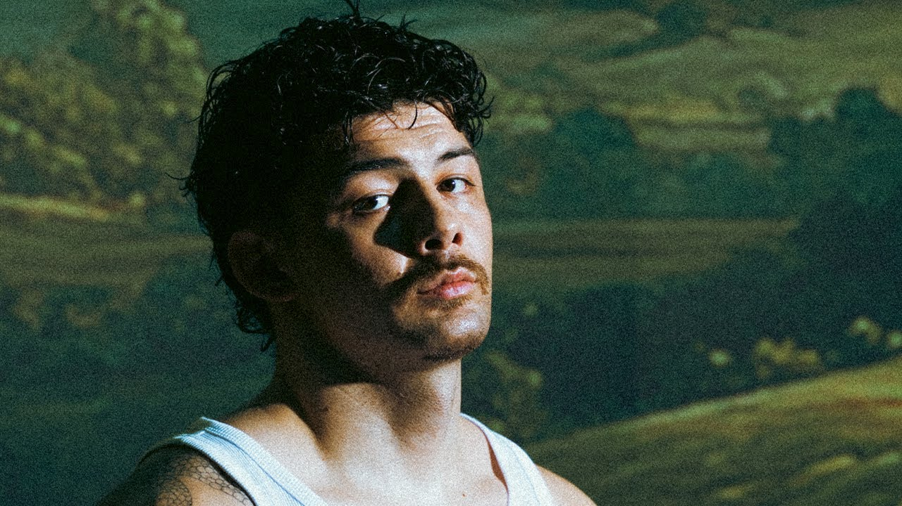

Calin

Calin
Calin Panfili (11. srpna 1997, Kišiněv, Moldavsko), známý jako Calin, je český R&B zpěvák a rapper s moldavskými kořeny. Do České republiky se přistěhoval v roce 1999 a patří k nejúspěšnějším interpretům současné CZ rapové scény.
Dětství
Narodil se v Moldavsku, ale vyrůstal v Česku. Hudbě se začal věnovat už kolem třinácti let. V mládí zvítězil v talentové soutěži pořádané Benem Cristovaem, který patřil k jeho prvním výrazným vzorům. Mezi další hudební vlivy patřili Ed Sheeran a později The Weeknd.
Počátky kariéry
Na gymnáziu se seznámil s producentem Davidem Kopeckým (D.Kop), se kterým začal nahrávat první skladby. V roce 2016 byl upsaný k labelu >Mike Roft Records, kde vydal své první singly Víc už nic a Blíž. Následovaly skladby Paradise (feat. Renne Dang) a úspěšný přechod pod slovenský label Comebackgang, kde zaujal singlem Play Time.
Průlom
V roce 2020 vydal debutové album Svědomí, ze kterého zaznamenala velký úspěch skladba Růže (feat. STEIN27). Album otevřelo Calinovi cestu do mainstreamu a potvrdilo jeho silnou pozici na nové vlně české scény.
Největší úspěchy
- Popstar (2022) – 14 týdnů na 1. místě českého žebříčku
- 3 AM (2023) – temnější a osobnější projekt
- Roadtrip (2023) – společné album s Viktorem Sheenem
- Bieber Fever (2024) – #1 v Česku i na Slovensku
- Bieber Fever Tour Life (2024) – opět #1
- řada hitů s miliony streamů na Spotify a YouTube
Calin se pravidelně objevuje v žebříčcích nejposlouchanějších českých interpretů a jeho skladby bodují na streamovacích platformách.
Ocenění
- Skippy McDippy – v roce 2024 vydal několik singlů
- Skippy McDippy (album, 2025) – stylově pop-country projekt
Styl a témata
Calinova tvorba se často zaměřuje na:
- vztahy a lásku
- samotu a vnitřní nejistoty
- úspěch a tlak popularity
- noční život a emoce
Jeho hudba je spíš atmosférická a melancholická, často kombinuje rap se zpěvem.
Styl a témata
V roce 2024 získal bakalářský titul na Filozofické fakultě Masarykovy univerzity v Brně v oboru Teorie interaktivních médií. Závěrečnou práci psal na téma marketingových trendů rapových umělců v Česku.
Diskografie
- Bierber Fever · TODO
- Live @ 02 arena Praha · 2024
- ROADTRIP · 2023
- POPSTAR* · 2022
- Svědomí · 2020